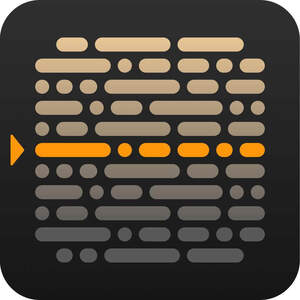

Trade Mark Journal No.2026/007 13 February 2026
UK00004332005 29 January 2026 (9,42)

- Class 9
- Software for use with teleprompters; software for use with teleprompter functions; software downloadable from the internet for use with teleprompters; software downloadable from the internet for use with teleprompter functions; computer software downloadable from the internet for use with teleprompters; computer software downloadable from the internet for use with teleprompter functions; downloadable software for use with teleprompters; downloadable software for use with teleprompter functions; downloadable software for smartphones for use with teleprompter; downloadable software for smartphones for use with teleprompter functions; downloadable software for mobile devices for use with teleprompters; downloadable software for mobile devices for use with teleprompter functions; downloadable software for tablet computers for use with teleprompters; downloadable software for tablet computers for use with teleprompter functions; downloadable software on handheld mobile digital electronic devices and other consumer electronics for use with teleprompters; downloadable software on handheld mobile digital electronic devices and other consumer electronics for use with teleprompter functions; downloadable software for computers for use with teleprompters; downloadable software for computers for use with teleprompter functions; downloadable computer software for use with teleprompters; downloadable computer software for use with teleprompter functions; downloadable computer software for smartphones for use with teleprompters; downloadable computer software for smartphones for use with teleprompter functions; downloadable computer software for mobile phones for use with teleprompters; downloadable computer software for mobile phones for use with teleprompter functions; downloadable computer software for tablet computers for use with teleprompters; downloadable computer software for mobile phones for use with teleprompter functions; downloadable computer software on handheld mobile digital electronic devices and other consumer electronics for use with teleprompters; downloadable computer software on handheld mobile digital electronic devices and other consumer electronics for use with teleprompter functions; downloadable mobile applications for teleprompter functions; downloadable mobile applications for teleprompter functions; interactive software for use with teleprompters; interactive software for use with teleprompter functions; interactive software for smartphones for use with teleprompters; interactive software for smartphones for use with teleprompter functions; interactive software for mobile devices for use with teleprompters; interactive software for mobile devices for use with teleprompter functions; interactive software for tablet computers for use with teleprompters; interactive software for computers for use with teleprompter functions; interactive software for computers for use with teleprompters; interactive software for tablet computers for use with teleprompter functions.
- Class 42
- Development of software compatible with teleprompters; development of software compatible with teleprompter functions; development of software for use with teleprompters; development of software for use with teleprompter functions; development of software downloadable from the internet for use with teleprompters; development of software downloadable from the internet for use with teleprompter functions; development of computer software downloadable from the internet for use with teleprompters; development of computer software downloadable from the internet for use with teleprompter functions; development of downloadable software for use with teleprompters; development of downloadable software for use with teleprompter functions; development of downloadable software for smartphones for use with teleprompters; development of downloadable software for smartphones for use with teleprompter functions; development of downloadable software for mobile devices for use with teleprompters; development of downloadable software for mobile devices for use with teleprompter functions; development of downloadable software for tablet computers for use with teleprompters; development of downloadable software for tablet computers for use with teleprompter functions; development of downloadable software on handheld mobile digital electronic devices and other consumer electronics for use with teleprompters; development of downloadable software on handheld mobile digital electronic devices and other consumer electronics for use with teleprompter functions; development of downloadable software for computers for use with teleprompters; development of downloadable software for computers for use with teleprompter functions; development of downloadable computer software for use with teleprompters; development of downloadable computer software for use with teleprompter functions; development of downloadable computer software for smartphones for use with teleprompters; development of downloadable computer software for smartphones for use with teleprompter functions; development of downloadable computer software for mobile phones for use with teleprompters; development of downloadable computer software for mobile phones for use with teleprompter functions; development of downloadable computer software for tablet computers for use with teleprompters; development of downloadable computer software for mobile phones for use with teleprompter functions; development of downloadable computer software on handheld mobile digital electronic devices and other consumer electronics for use with teleprompters; development of downloadable computer software on handheld mobile digital electronic devices and other consumer electronics for use with teleprompter functions; development of downloadable mobile applications for teleprompter functions; development of downloadable mobile applications for teleprompter functions; development of interactive software for use with teleprompters; development of interactive software for use with teleprompter functions; development of interactive software for smartphones for use with teleprompters; development of interactive software for smartphones for use with teleprompter functions; development of interactive software for mobile devices for use with teleprompters; development of interactive software for mobile devices for use with teleprompter functions; development of interactive software for tablet computers for use with teleprompters; development of interactive software for computers for use with teleprompter functions; development of interactive software for computers for use with teleprompters; development of interactive software for tablet computers for use with teleprompter functions; development of software to control teleprompters; development of software to control teleprompter functions; maintenance and updating of software for use with teleprompters; maintenance and updating of software for use with teleprompter functions; maintenance and updating of software downloadable from the internet for use with teleprompters; maintenance and updating of software downloadable from the internet for use with teleprompter functions; maintenance and updating of computer software downloadable from the internet for use with teleprompters; maintenance and updating of computer software downloadable from the internet for use with teleprompter functions; maintenance and updating of downloadable software for use with teleprompters; maintenance and updating of downloadable software for use with teleprompter functions; maintenance and updating of downloadable software for smartphones for use with teleprompters; maintenance and updating of downloadable software for smartphones for use with teleprompter functions; maintenance and updating of downloadable software for mobile devices for use with teleprompters; maintenance and updating of downloadable software for mobile devices for use with teleprompter functions; maintenance and updating of downloadable software for tablet computers for use with teleprompters; maintenance and updating of downloadable software for tablet computers for use with teleprompter functions; maintenance and updating of downloadable software on handheld mobile digital electronic devices and other consumer electronics for use with teleprompters; maintenance and updating of downloadable software on handheld mobile digital electronic devices and other consumer electronics for use with teleprompter functions; maintenance and updating of downloadable software for computers for use with teleprompters; maintenance and updating of downloadable software for computers for use with teleprompter functions; maintenance and updating of downloadable computer software for use with teleprompters; maintenance and updating of downloadable computer software for use with teleprompter functions; maintenance and updating of downloadable computer software for smartphones for use with teleprompters; maintenance and updating of downloadable computer software for smartphones for use with teleprompter functions; maintenance and updating of downloadable computer software for mobile phones for use with teleprompters; maintenance and updating of downloadable computer software for mobile phones for use with teleprompter functions; maintenance and updating of downloadable computer software for tablet computers for use with teleprompters; maintenance and updating of downloadable computer software for mobile phones for use with teleprompter functions; maintenance and updating of downloadable computer software on handheld mobile digital electronic devices and other consumer electronics for use with teleprompters; maintenance and updating of downloadable computer software on handheld mobile digital electronic devices and other consumer electronics for use with teleprompter functions; maintenance and updating of downloadable mobile applications for teleprompter functions; maintenance and updating of downloadable mobile applications for teleprompter functions; maintenance and updating of interactive software for use with teleprompters; maintenance and updating of interactive software for use with teleprompter functions; maintenance and updating of interactive software for smartphones for use with teleprompters; maintenance and updating of interactive software for smartphones for use with teleprompter functions; maintenance and updating of interactive software for mobile devices for use with teleprompters; maintenance and updating of interactive software for mobile devices for use with teleprompter functions; maintenance and updating of interactive software for tablet computers for use with teleprompters; maintenance and updating of interactive software for computers for use with teleprompter functions; maintenance and updating of interactive software for computers for use with teleprompters; maintenance and updating of interactive software for tablet computers for use with teleprompter functions; installation of software for use with teleprompters; installation of software for use with teleprompter functions; installation of software downloadable from the internet for use with teleprompters; installation of software downloadable from the internet for use with teleprompter functions; installation of computer software downloadable from the internet for use with teleprompters; installation of computer software downloadable from the internet for use with teleprompter functions; installation of downloadable software for use with teleprompters; installation of downloadable software for use with teleprompter functions; installation of downloadable software for smartphones for use with teleprompters; installation of downloadable software for smartphones for use with teleprompter functions; installation of downloadable software for mobile devices for use with teleprompters; installation of downloadable software for mobile devices for use with teleprompter functions; installation of downloadable software for tablet computers for use with teleprompters; installation of downloadable software for tablet computers for use with teleprompter functions; installation of downloadable software on handheld mobile digital electronic devices and other consumer electronics for use with teleprompters; installation of downloadable software on handheld mobile digital electronic devices and other consumer electronics for use with teleprompter functions; installation of downloadable software for computers for use with teleprompters; installation of downloadable software for computers for use with teleprompter functions; installation of downloadable computer software for use with teleprompters; installation of downloadable computer software for use with teleprompter functions; installation of downloadable computer software for smartphones for use with teleprompters; installation of downloadable computer software for smartphones for use with teleprompter functions; installation of downloadable computer software for mobile phones for use with teleprompters; installation of downloadable computer software for mobile phones for use with teleprompter functions; installation of downloadable computer software for tablet computers for use with teleprompters; installation of downloadable computer software for mobile phones for use with teleprompter functions; installation of downloadable computer software on handheld mobile digital electronic devices and other consumer electronics for use with teleprompters; installation of downloadable computer software on handheld mobile digital electronic devices and other consumer electronics for use with teleprompter functions; installation of downloadable mobile applications for teleprompter functions; installation of downloadable mobile applications for teleprompter functions; installation of interactive software for use with teleprompters; installation of interactive software for use with teleprompter functions; installation of interactive software for smartphones for use with teleprompters; installation of interactive software for smartphones for use with teleprompter functions; installation of interactive software for mobile devices for use with teleprompters; installation of interactive software for mobile devices for use with teleprompter functions; installation of interactive software for tablet computers for use with teleprompters; installation of interactive software for computers for use with teleprompter functions; installation of interactive software for computers for use with teleprompters; installation of interactive software for tablet computers for use with teleprompter functions. .
Teleprompter Korlátolt Felelosségu Társaság
Representative: McDaniels Law